izquierda / derecha: antes y después. + y - : zoom. Esc cierra
ALMAHUE EXPORT SPA, modo real, periodo 2026-09. Lo que faltaba desde la muestra del 1 de octubre: una sola lista de grupos, tipo en el alta, filtro OC o Proformas, contadores de usuarios sin grupo, suplencias por tipo, AdminConcepto filtrado y el piso de monto (la OC chica no pide el primer escalón). El recuadro verde y la etiqueta NUEVO están solo en la captura, no en el sistema. Un clic abre la imagen. La rueda o las teclas + y - hacen zoom. Izquierda y derecha cambian entre el antes y el después. Esc cierra. Para mostrarlo, sigue el recorrido. Indicadores de Felipe: comparación y recorrido.
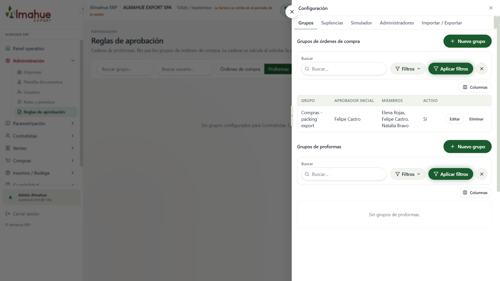
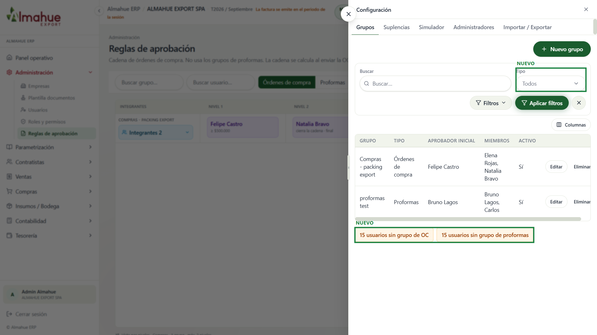
Las dos secciones pasan a una tabla. El tipo (órdenes de compra o proformas) va en la columna y en el filtro. Abajo, los contadores ámbar llevan a Usuarios con el filtro sin grupo. No se apretó Guardar ni se creó un grupo.
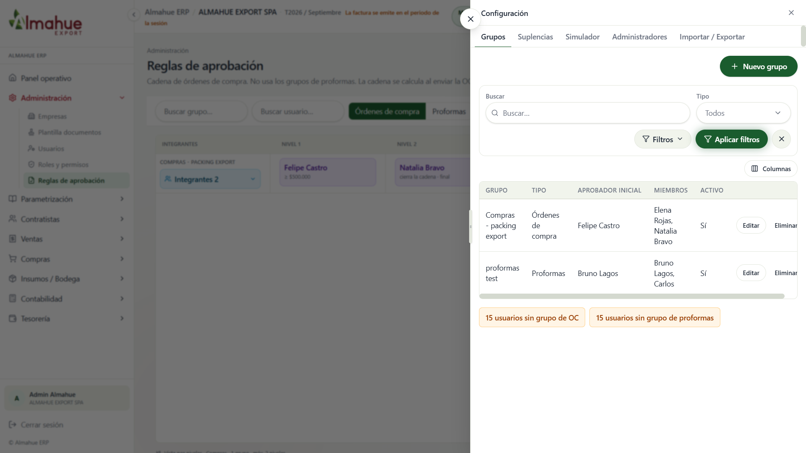
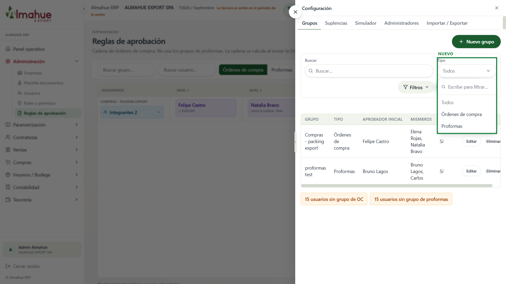
El combo Tipo está abierto: Todos, Órdenes de compra, Proformas. Filtra la misma lista. No se cambió el filtro. No se apretó Aplicar filtros.
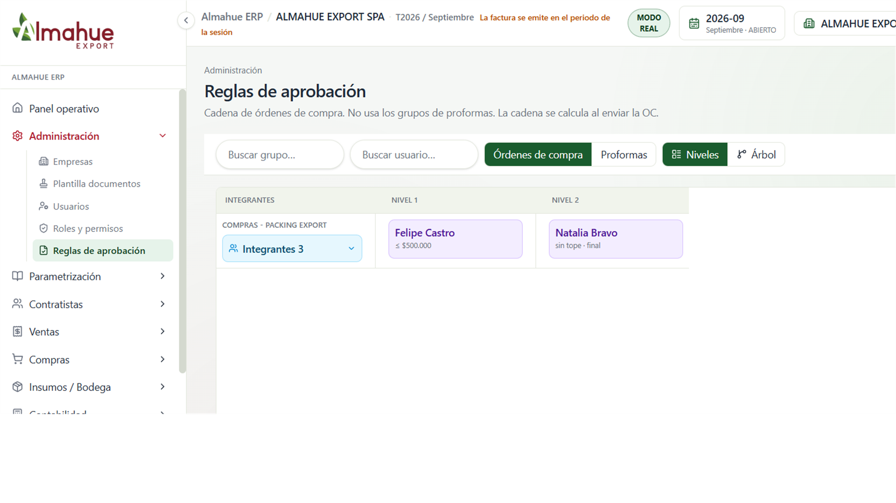
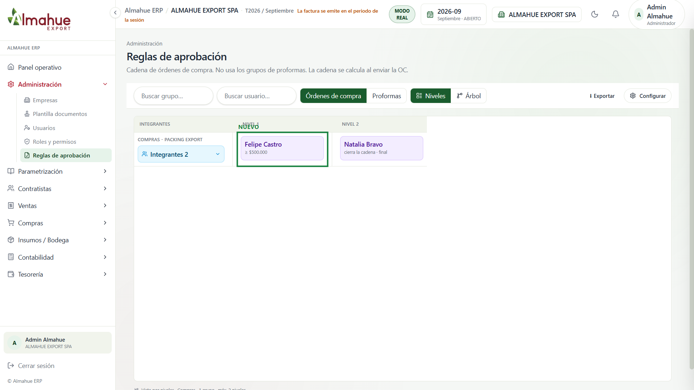
Felipe Castro entra cuando el monto es mayor o igual a 500.000. Natalia Bravo cierra la cadena. Una OC de 100.000 no le pide el primer escalón. No se envió una OC. No se apretó Configurar.
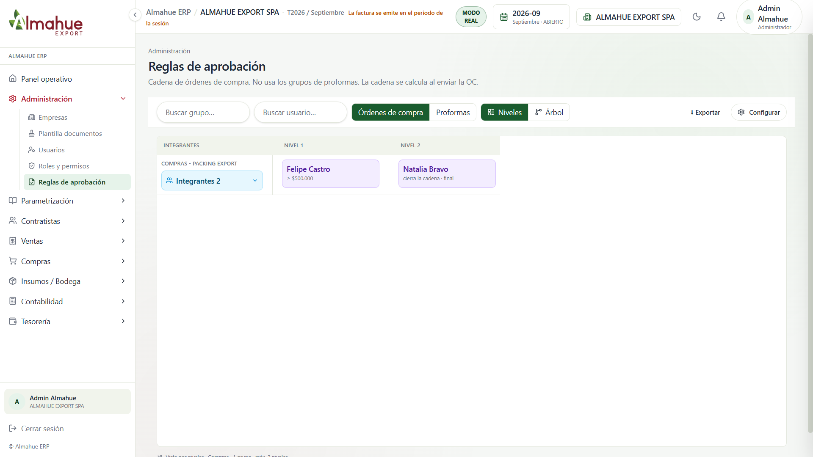
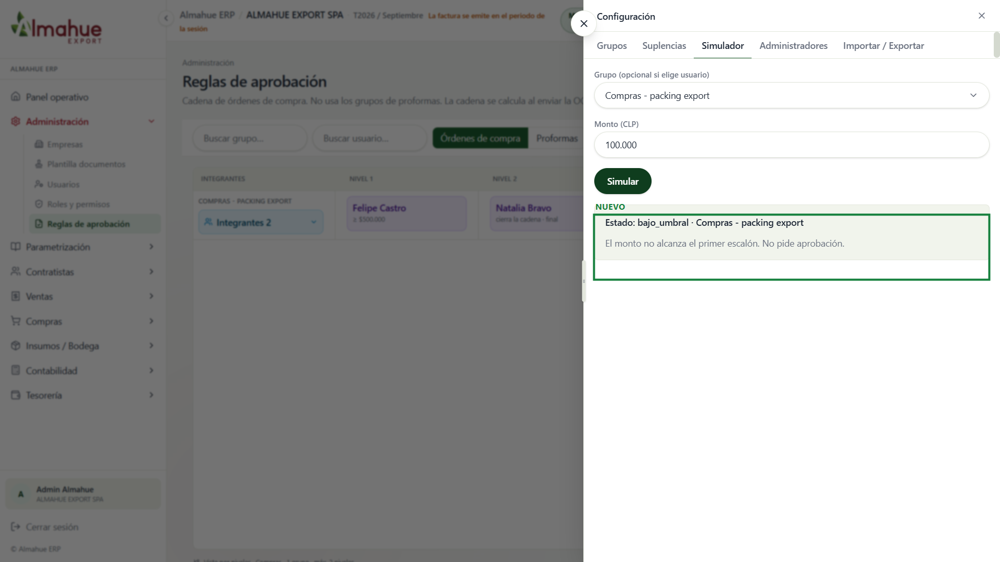
Con el grupo Compras - packing export y 100.000 el simulador responde bajo_umbral: el monto no alcanza el primer escalón y no pide aprobación. No se envió una OC. No se guardó.
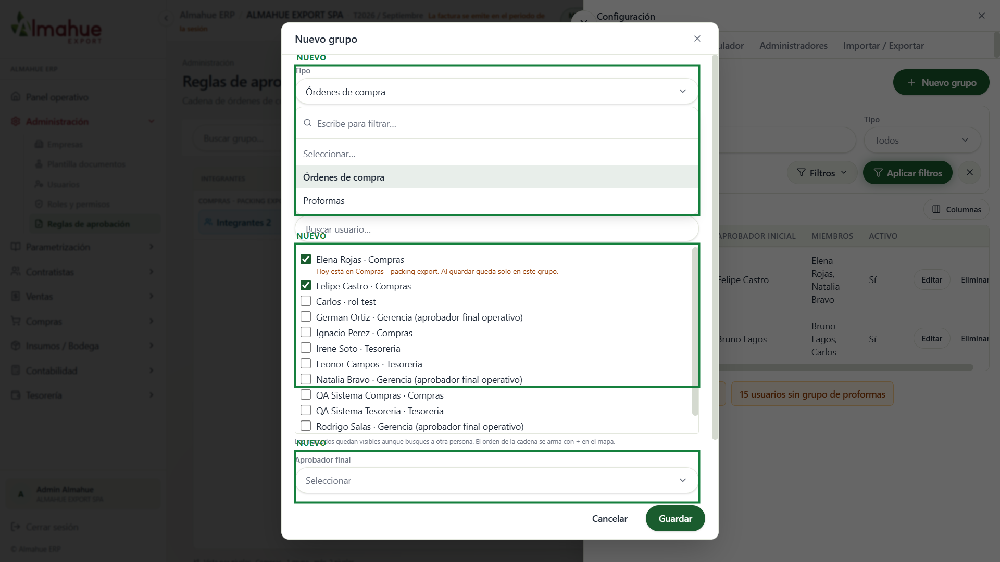
Un solo alta. El tipo se elige en el formulario (órdenes de compra o proformas), abierto. Los integrantes van primero. Elena Rojas y Felipe Castro están marcados; el aprobador final se elige solo entre los marcados. Se apretó Cancelar. No se apretó Guardar.
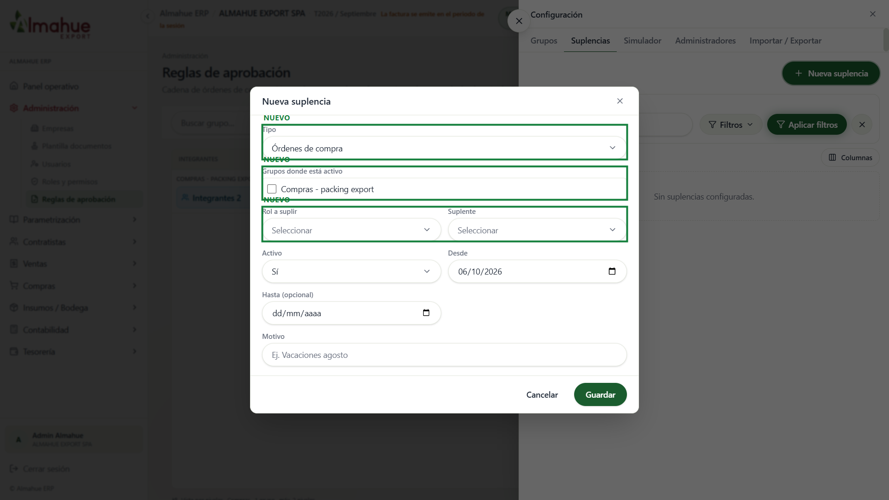
El orden es Tipo, luego los grupos donde el titular está activo, luego Rol a suplir y Suplente. Con Órdenes de compra aparece Compras - packing export. Se apretó Cancelar. No se apretó Guardar.
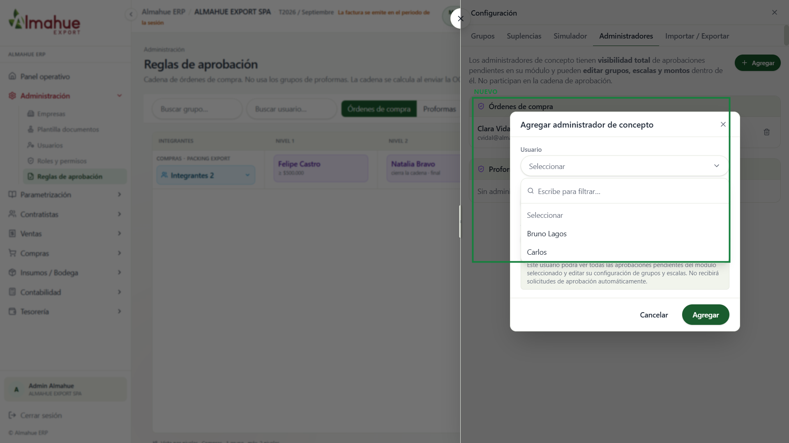
Con el módulo en Proformas, el combo Usuario abierto lista solo a quienes están en un grupo de ese tipo: Bruno Lagos y Carlos. Se apretó Cancelar. No se apretó Agregar.
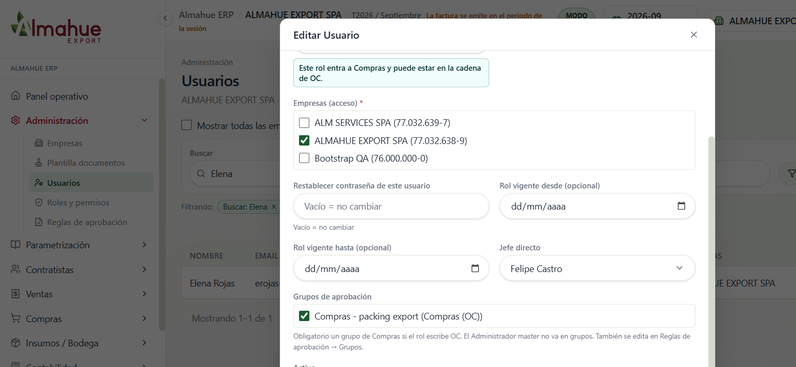
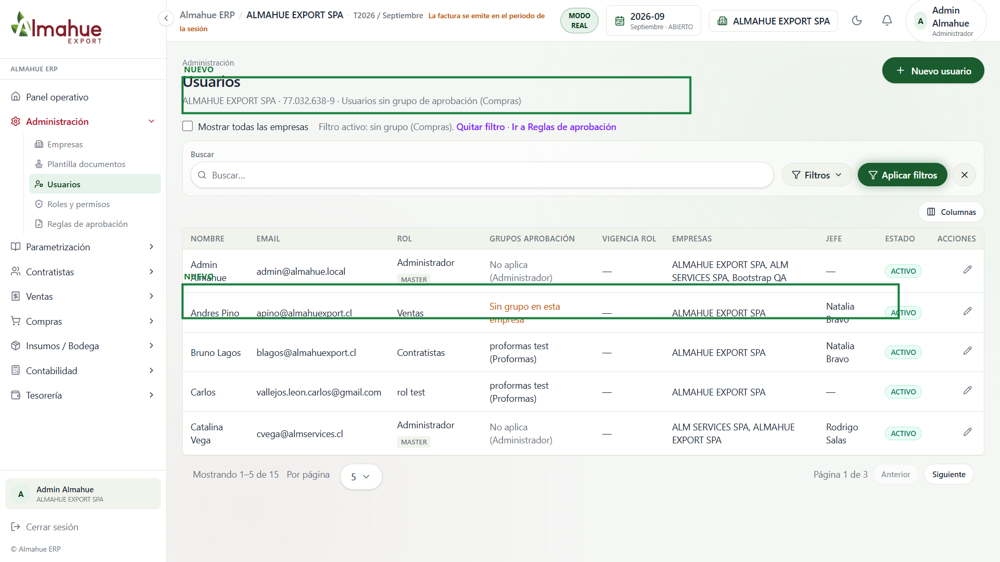
El contador ámbar abre Usuarios con el filtro sin grupo de Compras. Andres Pino tiene rol Ventas y figura sin grupo en esta empresa. No se apretó Guardar usuario.